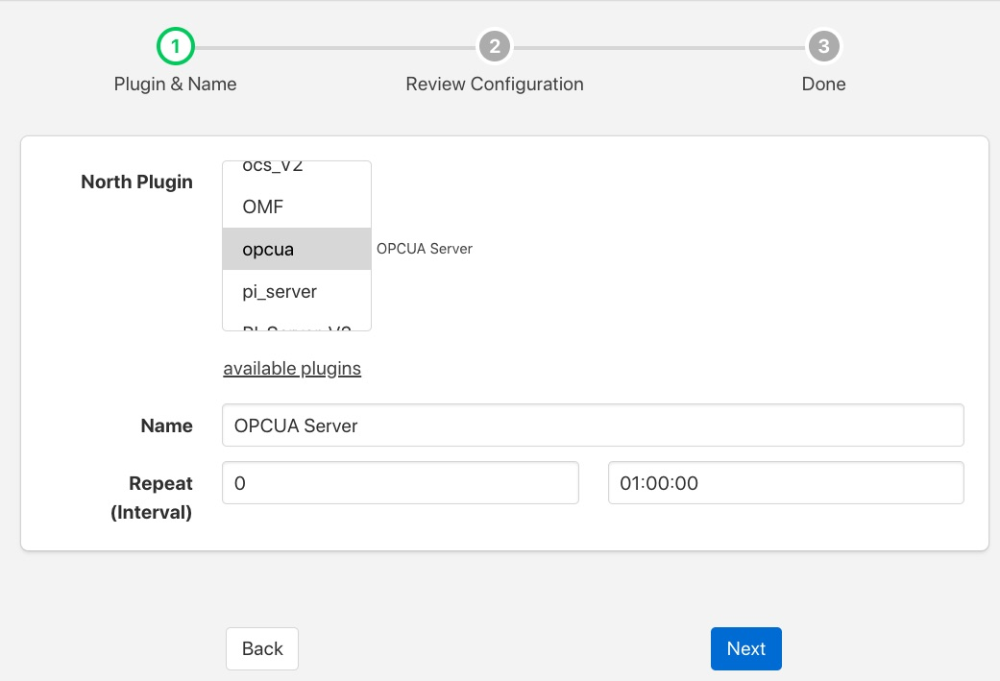

OPCUA Server¶
The foglamp-north-opuca plugin is a rather unusual north plugin as it does not send data to a system, but rather acts as a server from which other systems can pull data from FogLAMP. This is slightly at odds with the concept of short running tasks for sending north and does require a little more configuration when creating the North OPCUA server.
The process of creating a North OPCUA Server start as with any other north setup by selecting the North option in the left-hand menu bar, then press the add icon in the top right corner. In the North Plugin list select the opcua option.
|  |
In addition to setting a name for this task it is recommended to set the Repeat interval to a higher value than the 30 second default as we will be later setting the maximum run time of the north task to a higher value. Once complete click on Next and move on to the configuration of the plugin itself.
 |
This second page allows for the setting of the configuration within the OPCUA server.
- Server Name: The name the OPCUA server will report itself as to any client that connects to it.
- URL: The URL that any client application will use to connect to the OPCUA server. This should always start opc.tcp://
- URI: The URI you wish to associate to your data, this is part of the OPCUA specification and may be set to any option you wish or can be left as default.
- Namespace: This defines the namespace that you wish to use for your OPCUA objects. If you are not employing a client that does namespace checking this is best left as the default.
- Source: What data is being made available via this OPCUA server. You may chose to make the reading data available or the FogLAMP statistics
Once you have completed your configuration click Next to move to the final page and then enable your north task and click Done.
The only step left is to modify the duration for which the task runs. This can only be done after it has been run for the first time. Enter your North task list again and select the OPCUA North that you just created. This will show the configuration of your North task. Click on the Show Advanced Config option to display your advanced configuration.
 |
The Duration option controls how long the north task will run before stopping. Each time it stops any client connected to the FogLAMP OPCUA server will be disconnected, in order to reduce the disconnect/reconnect volumes it is advisable to set this to a value greater than the 60 second default. In our example here we set the repeat interval to one hour, so ideally we should set the duration to an hour also such that there is no time when an OPCUA server is not running. Duration is set in seconds, so should be 3600 in our example.